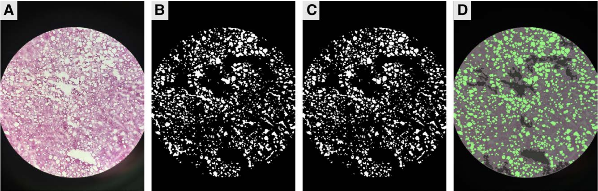

|
Katherine Xu I am a second-year PhD student at the University of Pennsylvania advised by Prof. Jianbo Shi. I'm interested in computer vision and deep learning. I received my bachelor's and master's in Computer Science at MIT, where I collaborated with researchers at MIT CSAIL, MIT Quest for Intelligence, and MIT Environmental Solutions Initiative. I've also had the pleasure to intern at Adobe, Meta, and Honda Research Institute. |

|
Research |
|
Good Seed Makes a Good Crop: Discovering Secret Seeds in Text-to-Image Diffusion Models
Katherine Xu, Lingzhi Zhang, Jianbo Shi arXiv, 2024 paper / code |
|
|
Detecting Image Attribution for Text-to-Image Diffusion Models in RGB and Beyond
Katherine Xu, Lingzhi Zhang, Jianbo Shi arXiv, 2024 paper / code |
|

|
Amodal Completion via Progressive Mixed Context Diffusion
Katherine Xu, Lingzhi Zhang, Jianbo Shi Computer Vision and Pattern Recognition Conference (CVPR), 2024 Highlight - 2.8% of submissions, 11.9% of accepted papers paper / project page / code Seeing the hidden in images using a pretrained diffusion model by tackling challenging occlusion and object co-occurrence. |

|
Chemistry Insights for Large Pretrained Graph Neural Networks
Katherine Xu, Janice Lan NeurIPS AI for Science Workshop, 2022 paper Analyzing neural networks trained on the Open Catalyst dataset by comparing their predictions with chemical intuition. Work done during an internship at Meta. |
|  |
A Novel Digital Algorithm for Identifying Liver Steatosis Using Smartphone-Captured Images
Katherine Xu*, Siavash Raigani*, ..., Katherine Fairchild, Leigh Anne Dageforde Transplantation Direct, 2022 paper / code |
Teaching |
|
|
Teaching Assistant, CIS 6800 Advanced Topics in Machine Perception, Fall 2023 |